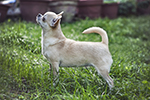
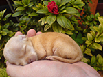

The Chihuahua is one of the smallest breeds of dog, and is named
after the Mexican state of Chihuahua. Chihuahuas remained a rarity
until the early 20th century, and the American Kennel Club did not
register a Chihuahua until 1904. In a 1520 letter, Hernan Cortés
wrote that the Aztecs raised and sold the little dogs as food.
Colonial records refer to small, nearly hairless dogs at the
beginning of the 19th century, one of which claims 16th-century
Conquistadores found them plentiful in the region later known as
Chihuahua.

An analysis of DNA from the genome of domesticated dogs indicates
that they entered North America from Siberia for 4,500 years and
were then isolated for the next 9,000 years. After contact with
Europeans, these lineages were replaced by Eurasian dogs and their
local descendants. The pre-contact dogs exhibited a unique genetic
signature that is now almost gone. In 2020, the sequencing of
ancient dog genomes indicates that in two Mexican breeds the
Chihuahua retains 4% and the Xoloitzcuintli 3% pre-colonial
ancestry.
Chihuahuas are the smallest breed recognized by some kennel clubs.
Current breed standards defined by registries specify an
"apple-head" or "apple-dome" skull conformation. Chihuahuas have
large, round eyes and large, erect ears, set in a high,
dramatically rounded skull. The stop is well defined, forming a
near 90 degree angle where the muzzle meets the skull. Dogs of the
older "deer" type, with a flat-topped head, more widely set eyes,
larger ears, and longer, more slender legs, may still be
registered.
Breed standards for this dog do not generally specify a height;
only a weight and a description of their overall proportions.
Generally, the height ranges between 6 and 9 in (15 and 23 cm);
however, some dogs grow as tall as 30 to 38 cm (12 to 15 in). Both
British and American breed standards state that a Chihuahua must
not weigh more than 5.9 lb (2.7 kg) for conformation.